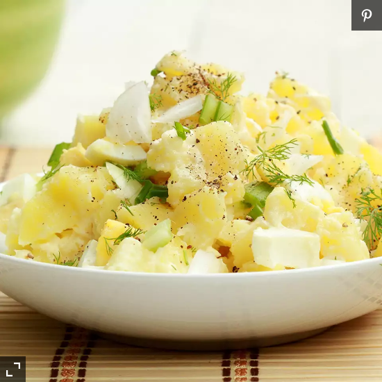

Heart-Healthy Potato Salad

THis easy and delicious recipe is certified by the American Heart Association.
By makeing a few ingredient swaps, you can enjoy this all-American side dish all season long!
Ingredients:
- 1.25kg Russet Potatoes
- 8 large hard-boiled eggs
- 1 medium yellow onion, chopped
- 1/2 cup dill pickles, chopped
- 1/4 cup mayonnaise
- 1/2 cup plain nonfat Greek yoghurt
- 3 Tbs brin from a pickle jar
- 2 Tbs yellow mustard
- 1/4 tsp garlic powder
- 1/4 tsp salt
- 1/4 tsp ground black pepper
Directions:
- Scrub Russet Potatoes well, but do not peel. Place potatoes in a stockpot, add water to cover,
and bring to a boil over high heat. Reduce heat to medium-high and cook 12 to 15 minutes, or until
a knife can easily pierce the potatoes but they are still firm. Pour off the hot water and add cold
water to the pot to help cool down the potatoes. Set potatoes aside while preparing the remaining ingredients.
- Remove the yolks from 4 of the hard-boiled eggs. Discard or save for another use. Roughly chop the 4 egg whites
and 2 of the whole eggs, saving 2 for garnish. Add the chopped eggs to a large mixing bowl. Add the onion and
chopped pickles to the bowl.
- In a small mixing bowl, combine the mayonnaise, Miracle Whip, Greek yogurt, dill pickle brine, yellow mustard,
garlic powder, salt, and pepper. Whisk well to combine; set aside.
- Remove the cooled potatoes from the pot of water. With a paring knife, remove the potato peels (they will come off
easily). Cut the potatoes into small cubes and add to the other ingredients in the mixing bowl. With a wooden spoon,
gently toss the salad ingredients to mix. Add the dressing mixture and gently toss again to coat all ingredients well.
-
Transfer potato salad to a serving bowl. Cut the remaining 2 eggs into thin slices and arrange them around the salad
to garnish. Cover and refrigerate at least 3 hours before serving (preferably overnight) to let the flavors combine.
Nutrition Facts
Per Serving:
112 calories; protein 5.3g; carbohydrates 3g; fat 8.6g; cholesterol 144.7mg; sodium 342.9mg